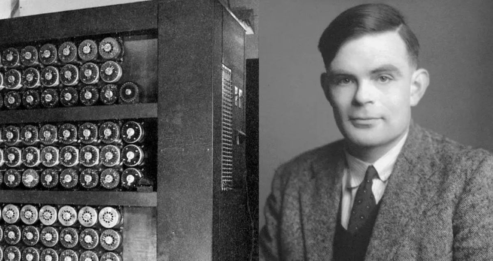
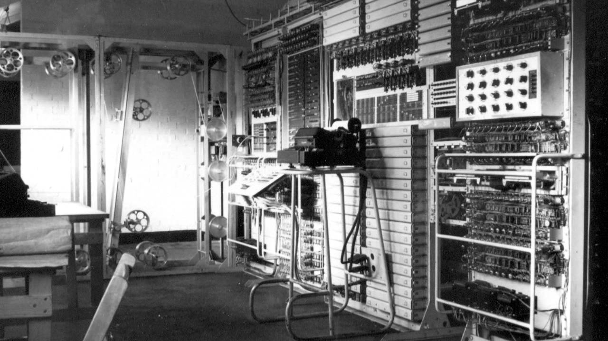

Logros
- Desarrolló el concepto de la "máquina universal de Turing", un modelo teórico para una máquina que puede realizar cualquier cálculo computacional. 
- Fue fundamental en el desarrollo del Colossus, la primera computadora electrónica programable. 
- Formuló el "Test de Turing", una prueba para determinar si una máquina puede exhibir un comportamiento inteligente indistinguible del de un humano.